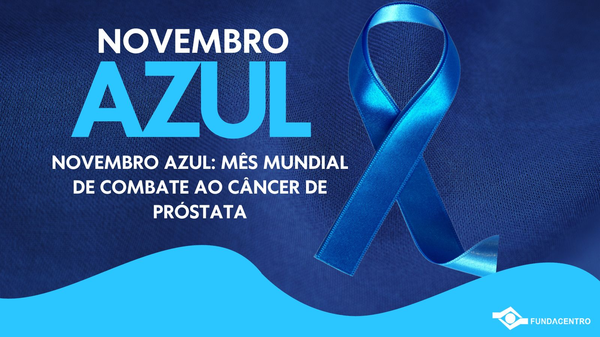

Biblioteca Virtual em Saúde

O câncer de próstata é um dos tipos de câncer mais comuns entre os homens, especialmente a partir dos 50
anos. A prevenção e o diagnóstico precoce são essenciais, pois a doença, em estágios iniciais, geralmente
não apresenta sintomas, mas pode progredir de forma silenciosa e agressiva. Fatores como histórico familiar,
idade avançada e hábitos de vida (como dieta inadequada e sedentarismo) aumentam o risco. Exames regulares,
como o toque retal e o PSA (antígeno prostático específico), permitem identificar alterações precocemente,
aumentando as chances de tratamento eficaz e cura. Portanto, a prevenção é fundamental para preservar a
saúde e a qualidade de vida.